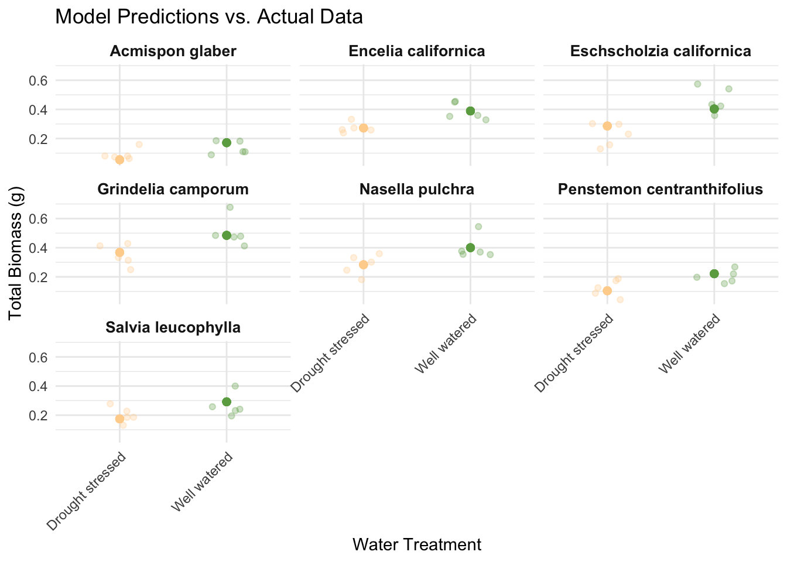

# general use
library(tidyverse)
library(readxl)
library(here)
library(janitor)
library(ggplot2)
library(dplyr)
# visualizing pairs
library(GGally)
# model selection
library(MuMIn)
# model predictions
library(ggeffects)
# model tables
library(gtsummary)
library(flextable)
library(modelsummary)
# read in data and specify path and sheet
drought_exp <- read_xlsx(path = here("data",
"Valliere_etal_EcoApps_Data.xlsx"),
sheet = "First Harvest")Homework III
GitHub Repository Link: https://github.com/michaelppaull/aguirre-michael_homework-03.git
Setup
Read in Packages & Data
Cleaning
# cleaning
drought_exp_clean <- drought_exp %>%
clean_names() %>% # nicer column names
mutate(species_name = case_when( # adding column with species scientific names
species == "ENCCAL" ~ "Encelia californica", # bush sunflower
species == "ESCCAL" ~ "Eschscholzia californica", # California poppy
species == "PENCEN" ~ "Penstemon centranthifolius", # Scarlet bugler
species == "GRICAM" ~ "Grindelia camporum", # great valley gumweed
species == "SALLEU" ~ "Salvia leucophylla", # Purple sage
species == "STIPUL" ~ "Nasella pulchra", # Purple needlegrass
species == "LOTSCO" ~ "Acmispon glaber" # deerweed
)) %>%
relocate(species_name, .after = species) %>% # moving species_name column after species
mutate(water_treatment = case_when( # adding column with full treatment names
water == "WW" ~ "Well watered",
water == "DS" ~ "Drought stressed"
)) %>%
relocate(water_treatment, .after = water) # moving water_treatment column after waterProblems
Problem I
Define Models
# null model
model0 <- lm(total_g ~ 1,
data = drought_exp_clean)
# total biomass as a function of SLA, water treatment, and species
model1 <- lm(total_g ~ sla + water_treatment + species_name,
data = drought_exp_clean)
# total biomass as a function of SLA and water treatment
model2 <- lm(total_g ~ sla + water_treatment,
data = drought_exp_clean)
# total biomass as a function of SLA and species
model3 <- lm(total_g ~ sla + species_name,
data = drought_exp_clean)
# construct model that shows total biomass as a function of water treatment and species
model4 <- lm(total_g ~ water_treatment + species,
data = drought_exp_clean)Compare Models
# Create comparison table
models <- list(
"Null" = model0,
"Model 1" = model1,
"Model 2" = model2,
"Model 3" = model3,
"Model 4" = model4
)
aic_values <- sapply(models, AIC)
bic_values <- sapply(models, BIC)
adjusted_r_squared <- sapply(models, function(model) summary(model)$adj.r.squared)
comparison <- data.frame(
Model = names(models),
AIC = aic_values,
BIC = bic_values,
Adjusted_R_Squared = adjusted_r_squared
)
# Convert to flextable
ft <- flextable(comparison)
ft <- autofit(ft)
caption <- "Table 1: Model Comparison Based on AIC, BIC, and Adjusted R-Squared Values.The table compares five models predicting total biomass (total_g) based on different predictors: SLA (Specific Leaf Area), water treatment, and species. The columns present the model names, Akaike Information Criterion (AIC), Bayesian Information Criterion (BIC), and adjusted R-squared values for each model. Lower AIC and BIC values indicate better model performance, while higher adjusted R-squared values suggest better explanatory power."
ft <- set_caption(ft, caption)
ftModel | AIC | BIC | Adjusted_R_Squared |
|---|---|---|---|
Null | -75.15946 | -70.66247 | 0.0000000 |
Model 1 | -157.48243 | -134.99748 | 0.7223465 |
Model 2 | -96.44059 | -87.44661 | 0.2823298 |
Model 3 | -127.07569 | -106.83923 | 0.5659903 |
Model 4 | -159.19595 | -138.95950 | 0.7257045 |
Statistical Methods
To examine the influence of SLA (Specific Leaf Area), water treatment, and species on total biomass, I fitted several linear regression models using the lm function in R. Specifically, I compared four models against the null:
A model with SLA, water treatment, and species as predictors.
A model with SLA and water treatment as predictors.
A model with SLA and species as predictors.
A model with water treatment and species as predictors.
To determine the model that best described the total biomass, I compared these models using the Akaike Information Criterion (AIC), Bayesian Information Criterion (BIC), and adjusted R-squared values. The comparison showed that Model 4, which includes water treatment and species as predictors, had the lowest AIC (-159.19595) and BIC (-138.95950) values and the highest adjusted R-squared (0.7257045) among the models tested. Therefore, Model 4 was selected as the best predictor model for total biomass.
To evaluate whether Model 4 conformed to the assumptions of a linear model, I examined diagnostic plots. The residuals vs. fitted values plot indicated that the residuals were randomly scattered around zero, suggesting linearity. The Normal Q-Q plot showed that the residuals were approximately normally distributed. The Scale-Location plot indicated homoscedasticity, as the spread of residuals was roughly constant across all levels of fitted values. Finally, the residuals vs. leverage plot did not reveal any points with excessively high leverage or influence, indicating that no single observation unduly affected the model.
Based on this analysis, Model 4, which includes water treatment and species, provides the best description of the influence of these factors on total biomass.
Visualize “Best” Model
# Create a data frame with predictions
drought_exp_clean$predicted <- predict(model4, drought_exp_clean)
# generate the plot
drought_exp_clean %>%
ggplot(aes(x = water_treatment,
y = total_g)) +
geom_jitter(aes(color = water_treatment), alpha = 0.3, width = 0.2) + # Jittered underlying data points
geom_point(aes(y = predicted, color = water_treatment), size = 2) +
facet_wrap(~ species_name) + # facet by species
labs(
title = "Model Predictions vs. Actual Data",
x = "Water Treatment",
y = "Total Biomass (g)"
) +
scale_color_manual(values = c("Drought stressed" = "#FFD39B", # color choice for drought stressed
"Well watered" = "#6aa84f")) + # color choice for watered
theme_minimal() +
theme(
legend.position = "none", # Remove legend
strip.text = element_text(size = 10, face = "bold"), # adjust species name size
axis.text.x = element_text(angle = 45, hjust = 1) # angle x-axis for easier reading
)